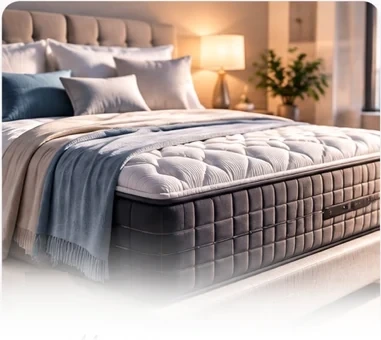
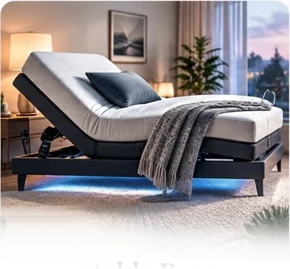
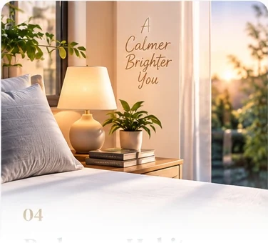
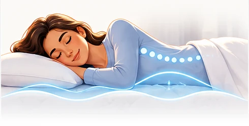
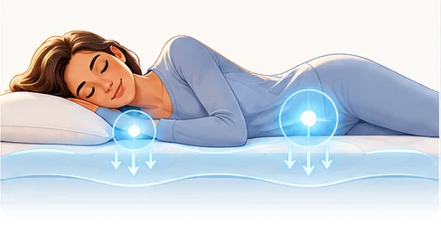
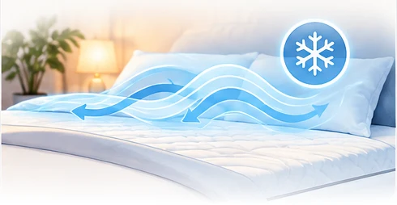
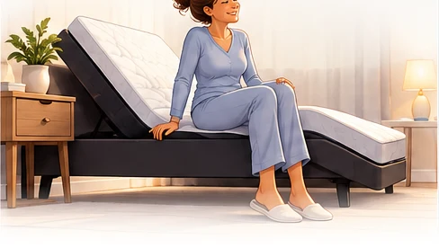
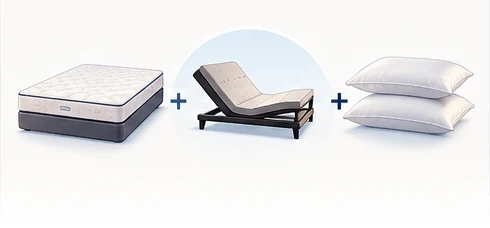

Understand your sleep
Explore your sleep position, routines, comfort concerns, temperature, and partner needs.
21+ Years of Experience as a Sleep Expert
I help people understand sleep, improve their sleep environment, and make informed decisions about mattresses, adjustable bases, pillows, and complete sleep systems.

Explore your sleep position, routines, comfort concerns, temperature, and partner needs.
Translate credible sleep research into practical, easy-to-understand guidance.
Consider the mattress, base, pillow, light, temperature, and habits surrounding sleep.
Sleep Research Center
This growing education center will summarize public sleep research in plain language so you can better understand recovery, memory, sleep cycles, routines, and the environment around you.
Sleep & Recovery
Quality sleep supports many restorative processes. This section will explain credible research without promising diagnosis, treatment, or a medical cure.

Sleep resources
Sleep.com — from the Sleep Experts at Mattress Firm — publishes free sleep education across wellness, bedroom design, sleep tech, and travel, and offers the Sleep Tracker app, which scores your night from your phone with no wearable needed.
Articles on wellness, bedroom design, sleep tech, and travel — written by Mattress Firm's Sleep Experts.
Explore Sleep.com →Your phone scores your night and breaks down your sleep patterns — no wearable needed.
Get the app →Your sleep environment
Your sleep system includes body support, pressure relief, positioning, temperature, light, sound, and the routines that prepare you for rest.

01The right balance of support and pressure relief can help your body settle into a more comfortable sleep position.

02Head and leg elevation can personalize positioning for relaxation, reading, mobility, and sleep comfort.
Pillow height, bedding feel, and temperature management can influence head, neck, and overall comfort.

04Light, sound, temperature, timing, and a consistent wind-down routine all contribute to the sleep environment.
Adjustable comfort education
An adjustable base can personalize how the body is positioned for sleep, relaxation, reading, and getting into or out of bed. Individual results and comfort needs vary.
May improve comfort for people who prefer not to lie completely flat. Persistent snoring, reflux, or breathing concerns should be discussed with a healthcare professional.
Raises the head and legs to distribute body weight differently and may feel more relaxing through the lower back for some sleepers.
Can provide a comfortable resting position after long periods of standing or sitting.
Targeted support and gentle vibration may help some people relax and settle into a preferred position.
Personalized guidance
A thoughtful consultation considers sleeping position, pressure points, temperature, movement, mobility, partner needs, preferred feel, and budget.

Sleep positionSide, back, stomach, and combination sleepers may need different balances of cushioning and support.

Shoulders & hipsSide sleepers often benefit from enough cushioning to let the shoulder and hip settle comfortably.

Sleeping hotMaterials, airflow, bedding, room temperature, and personal sensitivity can all influence thermal comfort.
Motion isolation, mattress size, edge support, and split positioning can matter when two people share a bed.

MobilityMattress height and adjustable positioning may make transitions in and out of bed feel more manageable.

Complete systemEach component should work toward the same comfort and support goals rather than being selected separately.
Meet Minoo Lakani
With more than 21 years of experience as a Sleep Expert, I have dedicated my career to helping people better understand their individual comfort needs and create healthier, more supportive sleep environments.
My goal is to combine practical experience with credible public sleep research, explain the information clearly, and provide personalized guidance without using a one-solution-fits-all approach.
Proud member of the #MattFirmFamily.
Opinions expressed are my own and are not those of Mattress Firm.
Common questions
No. Firmness describes how a mattress feels, while support describes how it responds to the body. The right balance depends on the sleeper's body, position, and comfort needs.
It allows the head and legs to be positioned independently, which may support relaxation, pressure distribution, mobility, and a more comfortable resting posture for some people.
Pillow height and shape help support the head and neck. The best match depends on shoulder width, sleep position, mattress feel, and personal preference.
No. This website provides general sleep education and product-comfort guidance. Medical symptoms, persistent pain, breathing concerns, reflux, or sleep disorders should be discussed with a qualified healthcare professional.
Personal sleep-system guidance
Call or text to discuss your sleep position, current sleep environment, comfort concerns, preferred feel, partner needs, and budget.